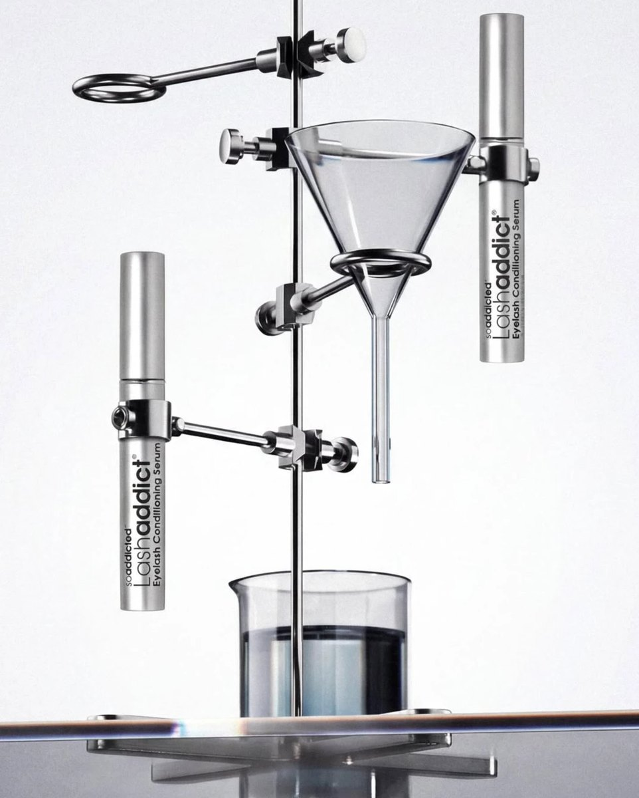

VIP 고객
- 기준
- 마지막 구매 90일 이내, 구매 4회 이상 또는 누적 구매 60만 원 이상
- 운영 방식
- 신제품과 단독 혜택 먼저 안내, 유사 타겟의 기준 고객으로 활용

자사몰 성장과제 제안
이시스코스메틱 | 래쉬애딕트 자사몰
공고에 나온 B2B, B2C 자사몰 성장과제에 맞춰 래쉬애딕트의 시장과 고객, 지금 자사몰, 해외 공식 사이트, 경쟁 제품을 살펴보고 먼저 할 과제를 정리했습니다.
래쉬애딕트는 판매점에서 원장님이 고객에게 권하는 고가 제품입니다. 자사몰 성장과제도 판매점과의 관계를 지키면서 소비자 구매 경로를 넓히는 방향으로 살펴봤습니다.
고가 프리미엄
소비자가는 143,000원(5ml)입니다. 이번에 조사한 샵 판매 제품 중에는 4만 원대 제품이 많았습니다. 가격 차이가 큰 만큼 정품 여부와 충분한 제품 정보가 구매 결정에 중요하다고 봤습니다.
판매 구조
공개된 유통 구조는 본사에서 지역 교육기관을 거쳐 전국 판매점으로 이어집니다. 판매점은 주로 속눈썹 연장과 펌 샵이고, 사업자등록증과 샵 인스타그램 계정으로 판매를 신청합니다. 원장님 대상 그로우 세미나도 해마다 엽니다.
매출의 중심
공개 자료를 바탕으로 판매점에 대한 공급과 재주문이 매출의 중심일 것으로 봤습니다. 판매점과 자사몰의 매출 비중, 판매점별 재주문 현황은 내부 데이터로 확인하겠습니다.
원장님이 권하는 이유
속눈썹 연장과 펌 시술을 받는 고객은 시술 후 관리에 관심이 많습니다. 원장님이 사용법을 안내하며 제품을 권하는 과정이 판매로 이어지고, 펌 후 클리닉 세럼인 자체 브랜드 아이원잇도 같은 흐름에 있습니다.
판매점과 소비자 CRM 구분
판매점에는 재주문과 교육 정보를, 소비자에게는 사용법과 재구매 시점을 안내하겠습니다. 판매점에서 산 소비자의 정보는 회사가 직접 가진 데이터가 아닐 수 있어, 보유한 정보와 활용 권한에 맞춰 CRM을 나누겠습니다.
자사몰이 누구를 위한 곳인지 먼저 정해야 과제의 순서가 정해집니다. 공개 자료를 바탕으로 고객을 셋으로 나눠 봤습니다.
원장님(판매점)
매출의 중심일 것으로 보는 고객입니다. 정품에 대한 믿음, 고객에게 설명할 자료, 편리한 재주문, 안정적인 판매 환경을 원할 것으로 봅니다. 소비자 대상 자사몰과는 별도로 판매점 전용 안내와 재주문 경로가 필요한 고객입니다.
샵에서 처음 써 본 고객
속눈썹 연장이나 펌을 받으며 원장님 추천으로 래쉬애딕트를 처음 접한 고객입니다. 재구매할 때 샵을 다시 찾거나 온라인에서 정품을 찾을 수 있습니다. 자사몰에서 재구매를 늘리기 위해 주목할 고객이라고 봤습니다.
온라인에서 처음 찾아온 고객
다른 가격대의 제품이나 병행수입 제품과 비교하며 정품 여부와 후기를 확인할 것으로 보는 고객입니다. 정품 확인 방법, 사용법, 후기, 가까운 판매점 안내가 필요하다고 봤습니다.
자사몰 재구매가 기존 판매점과 경쟁하지 않도록, 고객이 처음 구매한 판매점을 선택하면 해당 판매점의 기여 성과로도 집계하는 방식을 검토하겠습니다. 실제 운영 전에는 고객의 선택 부담, 판매점별 성과 인정 기준, 개인정보 처리 요건을 확인하겠습니다.
측정
2026년 10월 21일 공개 페이지에서 네이버 분석 스크립트는 확인했지만 GA4와 GTM, 메타와 카카오 픽셀은 확인하지 못했습니다. 지금 보이는 수집 환경만으로는 광고 유입부터 구매까지의 성과를 알기 어렵습니다.
보안 연결
https 주소로 접속해도 http 주소로 이동합니다. 보안 연결을 정리하면 처음 온 고객도 더 안심하고 결제할 수 있습니다.
열리지 않는 링크
PC 하단에는 회원가입, 배송조회, 교환환불 등 연결되지 않는 링크가 20개 이상 있습니다. 지금 상품과 관련이 적은 메뉴도 남아 있고, 모바일 이용약관 링크도 열리지 않습니다.
예전 주소
검색 결과에 남은 예전 주소(issis.co.kr/SOADDICTED)를 누르면 없는 페이지가 뜹니다.
후기
고객후기 게시판은 로그인해야 볼 수 있고, 상품 상세페이지에서는 후기를 찾기 어렵습니다. 처음 사는 고객이 참고할 후기를 더 쉽게 보여 줄 필요가 있습니다.
메뉴 구성
모바일 메뉴에 소비자용 정보와 판매점 신청, 복원케어 도입, 그로우 세미나가 함께 있습니다. PC와 모바일의 메뉴 구성도 달라, 이용 목적에 맞게 나눌 필요가 있습니다.
미국 본사몰의 정기구독
주문마다 최대 25% 할인되는 정기구독을 운영합니다. 고객이 배송을 미루거나 건너뛸 수 있습니다.
미국 본사몰의 첫 구매 안내
환불 보장, 사용 전후 사진, 자세한 FAQ를 제공합니다. 국내에 적용할 때는 환불 조건과 광고에 쓸 수 있는 표현을 따로 확인해야 합니다.
일본 공식 사이트의 취급점 찾기
가까운 취급점을 찾을 수 있게 하고, 주변에 취급점이 없으면 공식 온라인숍으로 안내합니다. 판매점과 온라인 구매 경로를 함께 운영하는 참고 사례입니다.
일본의 정품 인증과 후기
QR 정품 인증과 제품 보증 번호를 안내합니다. 일본 리뷰 앱 LIPS에서는 후기 1,640건을 확인했습니다.
조사한 제품 중 샵에서 파는 속눈썹 영양제는 4만 원대가 많았습니다. 래쉬애딕트는 143,000원으로 가격 차이가 크고, 전국 판매점과 교육기관을 거치는 유통 구조가 특징입니다. 가격이 비슷한 리바이탈래쉬도 함께 비교했습니다.
| 브랜드 | 가격 | 주 판매 경로 | 눈에 띄는 점 |
|---|---|---|---|
| 래쉬애딕트 | 143,000원 (5ml) | 전국 판매점, 자사몰 | 지역 교육기관 16곳, 원장님 대상 그로우 세미나 |
| 리바이탈래쉬 어드밴스드 | 163,900원 (3.5ml) | 자사몰(확인한 판매 경로) | 공식 자사몰에서 정품 판매 안내 |
| 마렌 | 약 4만 원 (15ml) | 미용인 쇼핑몰, 샵 | 첫 구매 시 매장 포스터 제공, 무단 재판매 신고 창구 |
| 애딕트컬 올 데이 래쉬 세럼 | 40,000원 (7ml) | 로피몰 | 같은 브랜드의 속눈썹 펌제와 함께 판매 |
| 젬소 | 43,900원 (3ml) | 쿠팡, 자사몰 | 쿠팡과 자사몰에서 판매, 판매처별 가격 차이 확인 |
| 인버팀 래쉬 퍼펙트 토닉 앤 세럼 | 50,400원 | 자사몰 | 두피 케어 제품과 속눈썹 제품을 함께 판매 |
가격은 2026년 10월 조사 당시 각 공식몰과 판매처에 표시된 금액이며, 판매처와 행사에 따라 달라질 수 있습니다.
1
공고: GA4, GTM 등 데이터 수집 환경 점검과 개선, 월간 핵심지표 분석
기존 데이터 수집 환경과 메이크샵 연동 기능을 확인한 뒤 GA4와 GTM으로 회원가입, 장바구니, 구매 이벤트를 측정하겠습니다. 메타와 카카오 픽셀, 네이버 전환 추적도 실제 운영 매체와 개인정보 처리 요건을 확인해 적용하겠습니다. 매달 유입, 첫 구매, 재구매 지표를 정리해 공유하겠습니다.
2
공고: 고객 유입부터 구매, 재구매까지의 전환 퍼널 분석과 개선 실험
연결되지 않는 링크와 지금 상품에 맞지 않는 메뉴를 정리하고, 예전 주소는 관련 페이지로 연결하겠습니다. 공개 가능한 후기는 로그인 없이 볼 수 있게 검토하고, 측정 데이터가 쌓이면 상세페이지의 이탈 구간을 찾아 개선안을 비교하겠습니다.
3
공고: B2B, B2C 자사몰 성장과제 발굴 및 실행
소비자에게는 제품 정보와 구매, 사용법을 쉽게 안내하고, 판매점에는 신청과 교육, 재주문 정보를 따로 제공하겠습니다. 교육기관과 판매점의 지금 주문 방식을 먼저 확인한 뒤 사업자 전용 몰의 범위를 정하고, 판매점 찾기와 자사몰 구매를 함께 안내하는 방식도 판매점 정책에 맞춰 설계하겠습니다.
4
공고: 회원, 구매 데이터 기반 고객 세분화와 신규회원, 첫 구매, 재구매, 휴면 고객별 CRM 캠페인
회원과 구매 데이터로 마지막 구매 시점, 구매 횟수, 누적 구매 금액을 기준 삼아 고객을 나누겠습니다. 첫 구매 고객에게는 사용법을 안내하고, 래쉬애딕트 구매 후 3~4개월에는 재구매 시기를 확인할 수 있도록 안내하겠습니다. 광고성 메시지는 수신 동의와 관련 법규를 확인한 뒤 보내고, 판매점은 별도의 재주문 기준을 세우겠습니다.
자사몰 주문 고객은 메이크샵 주문 데이터로 바로 시작할 수 있고, 샵에서 산 고객은 정품 등록으로 회원 가입과 수신 동의를 받아 데이터를 모으겠습니다.
5
공고: 구매전환율, 재구매율 향상을 위한 프로모션, 멤버십 등 프로그램 기획
정품 등록과 회원 혜택을 잇는 방안, 예상 재구매 시점에 맞춘 정기배송을 검토하겠습니다. 미국 본사몰의 정기구독을 참고하되, 국내 유통 정책과 판매점의 수익 구조를 먼저 확인하겠습니다.
입사 첫 달에는 측정 환경과 구매 경로를 먼저 점검하고, 바로 고칠 수 있는 것부터 실행하겠습니다. 이후 데이터와 유통 구조를 확인하면서 나머지 과제의 순서를 정하겠습니다.
회원과 구매 데이터를 확인한 뒤 마지막 구매 시점, 구매 횟수, 누적 구매 금액으로 고객을 나누겠습니다. 판매점은 실제 주문 경로와 재주문 주기를 확인한 뒤 따로 분석하겠습니다.
01고객을 나누는 세 기준
1마지막 구매 시점
얼마나 최근에 구매했는가
2구매 횟수
지금까지 몇 번 구매했는가
3누적 구매 금액
지금까지 얼마를 구매했는가
024 × 4 × 464개 유형
 1마지막 구매 시점
2구매 횟수
3누적 구매 금액
VIP
충성
신규
이탈 위험
1마지막 구매 시점
2구매 횟수
3누적 구매 금액
VIP
충성
신규
이탈 위험
0364개 유형을 5개 고객 유형으로 묶기
VIP 고객
충성 고객
신규 고객
이탈 위험 고객
휴면 고객
분석 순서
데이터 확인
주문, 회원 데이터의 위치와 기록 상태64개 유형 나누기
구매 전 고객은 제외하고, 구매 고객을 세 기준에 따라 각각 4개 구간으로 분류5개 유형으로 묶기
유형별 메시지와 광고 운영 방식 정하기결과 비교
같은 유형에서 무작위로 나눈 발송군과 미발송군의 동일 기간 구매율 비교관리 지표
큐브에 색으로 표시한 칸은 고객 유형의 예시입니다. VIP부터 순서대로 분류해 한 고객이 한 유형에만 속하도록 하겠습니다. 구간은 실제 데이터를 확인한 뒤 조정하겠습니다. 이탈 위험 구간인 91~120일은 래쉬애딕트의 권장 사용 기간인 3~4개월을 참고했습니다. 구매 전 고객과 판매점은 별도로 분석하겠습니다. 광고성 메시지는 수신 동의와 개인정보 이용 범위를 확인한 뒤 발송하겠습니다.
판매점은 마지막 주문일, 총 주문 횟수, 누적 주문 금액으로 살펴보겠습니다. 지역 교육기관을 거친 주문 내역을 볼 수 있는지 먼저 확인하고, 실제 재주문 주기에 따라 기간을 정하겠습니다.
재주문이 꾸준한 판매점
신제품과 세미나 정보를 안내하고, 필요한 매장용 자료를 제공하는 방안을 검토합니다.
첫 입점 후 재주문이 없는 판매점
첫 주문 이후 제품 안내 자료와 고객 응대 정보를 보내고, 재주문이 없는 이유를 확인하겠습니다. 안내 시점은 실제 주문 주기를 참고해 정하겠습니다.
일정 기간 주문이 없는 판매점
담당 교육기관과 협의해 주문이 없는 이유를 확인하고, 필요한 교육이나 세미나 정보를 안내하는 방안을 검토합니다.